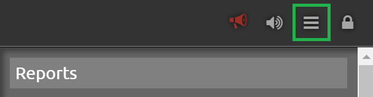
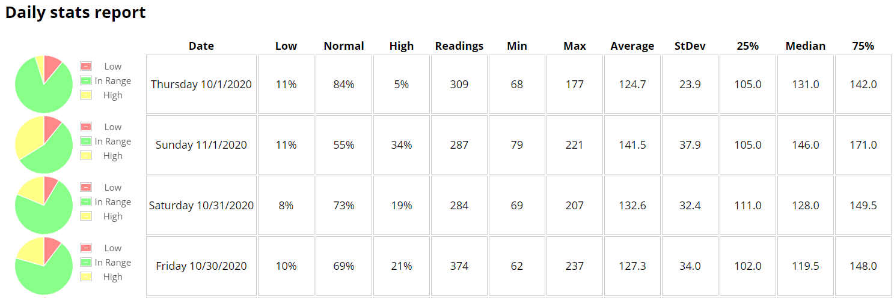
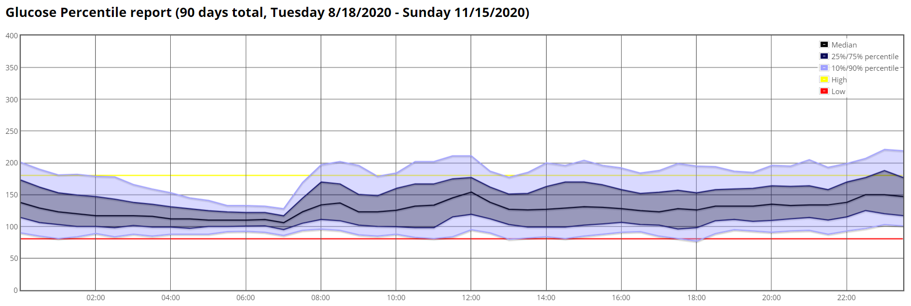
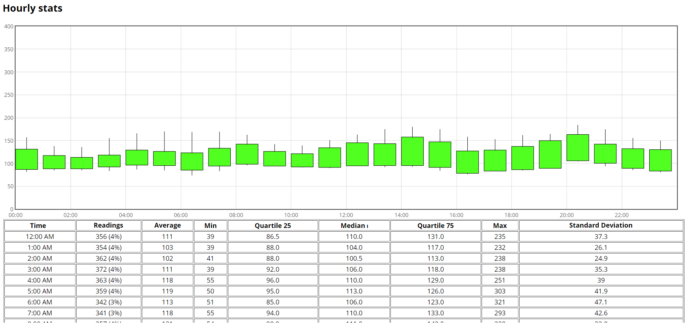
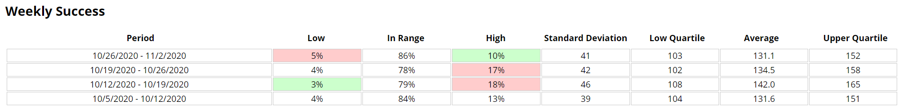

Nightscout reports
Access reports from the drawer menu,
{kind=link}
View profiles
Profiles view gives important information on the patient therapy parameters.
Select profiles then SHOW (no additional setup is necessary).
{kind=link}
Patients profile(s) will display.
{kind=link}
DIA is the duration of the insulin action.
Carbs absorption rate is complex to calculate for patients and can be undefined (or zero) if the DIY system doesn’t update the value (when existing).
Insulin to Carbs ratio (IC) and Insulin Sensitivity Factor (ISF) can be defined by time periods. Only one visible value means whole day.
Basal rates should match the pump settings.
Select a report
Select the report type:
{kind=link}
Day to dayWeek to weekDaily StatsDistributionHourly statsPercentile ChartWeekly Distribution
Setup the report
Select the period used to analyze data.
Enable the check box and either select From: and To: dates to define the interval
{kind=link}
or:
{kind=link}
TodayLast 2 daysLast 3 days,Last weekLast 2 weeksLast MonthLast 3 months
Avoid selecting too long periods of time for daily reports.
Unless looking for specific Notes or Event type leave the checkboxes disabled.
{kind=link}
You can select which week days to use.

Confirm Target BT range bottom and top for TIR (or TITR) and graph range lines.
You can sort the report from older to newer or newer first.
{kind=link}
Click SHOW and wait for data to load and rendering to complete. This might take some time if the period is long (this will also depend on the Nightscout host engine).
{kind=link}
Day To day
This report will show BG, day by day, including selected treatments.
{kind=link}
{kind=link}
Enable insulin, carbs and basal rate to have consistent insulin distribution information.
{kind=link}
When changing selections, click again SHOW to update the view.
Week to Week
This report will give a week by week spaghetti view, with color code for week days selected.

Daily stats
This report will give a daily distribution view.
{kind=link}
Distribution
This report will give a complete distribution view.
You also can filter by hours (scroll to the bottom of the page).


You can quickly find %TIR, %TUR, %TAR and the rough estimated HbA1c values.
{kind=link}
Range must be modified to see %TITR.
Percentile Chart
This report will give a percentile distribution view.
{kind=link}
{kind=link}
Hourly stats
This report will give an hourly distribution view with a box plot showing 25% and 75% percentile plus mean and standard deviation, then additional hour by hour statistics in a table.
{kind=link}
Weekly Distribution
This report will give a weekly view.
{kind=link}